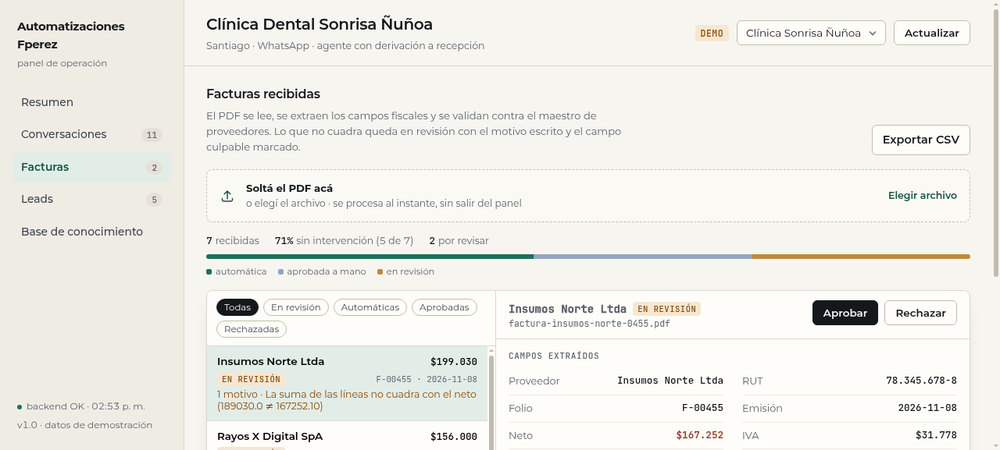

Módulo de facturación para pymes chilenas. Lee el PDF, extrae proveedor, folio, fecha, neto, IVA y total, valida RUT, IVA 19% y cuadre de líneas, y arma una cola donde lo automático se aprueba solo y lo dudoso llega con el motivo escrito. Sin modelos en el camino crítico: mismas facturas, mismo resultado, cero costo por documento.

Cuatro pasos, todos deterministas. El único paso que puede fallar es el de lectura del PDF, y cuando falla no inventa: devuelve un motivo.
Se extrae la capa de texto y se buscan los campos con patrones por etiqueta (proveedor, RUT, folio, fecha, neto, IVA, total), con respaldo para los formatos que no traen etiqueta.
Si el PDF es un escaneo sin texto, no se adivina: queda en revisión con missing_field.
RUT con dígito verificador, IVA 19% del neto, suma de líneas contra el neto, neto + IVA contra el total, fecha dentro de rango y tope por documento. Tolerancia de 1 peso en CLP y 0,02 en USD, porque los PDF redondean distinto.
Si pasa todas las reglas se registra como automática. Si no, entra a revisión con un código estable
(total_mismatch, iva_mismatch, lines_mismatch, unknown_vendor…)
y el texto que ve la persona: «Neto + IVA no cuadra con el total (450.000 + 85.500 ≠ 536.000)».
Cola con filtros por estado, detalle con los campos y los renglones leídos, aprobar / rechazar / devolver, y
exportación a CSV para el contador. Idempotencia por sha256: subir dos veces el mismo archivo no
duplica la factura.
Set de 30 facturas generadas para cubrir lo que aparece en la práctica: formato chileno clásico y en
tabla, facturas en inglés con USD, exenta sin IVA, multi-página, descuento por línea, RUT sin formato, folio
alfanumérico, fechas borde, total justo en el tope y un caso por cada motivo de revisión. Se corre con
eval_invoiceflow.py y queda guardado en la base.
| Métrica | Valor | Cómo se mide |
|---|---|---|
| Facturas con estado correcto | 30/30 (100%) | automática o a revisión, contra el estado esperado |
| Campos extraídos bien | 7/7 al 100% | proveedor, folio, fecha, neto, IVA, total y moneda |
| Motivos de revisión | precisión y cobertura 100% | el código que se muestra es el que correspondía |
| Latencia por documento | 2,9 ms mediana · 83 ms máximo | de texto extraído a veredicto, en el contenedor de la API |
| Costo por factura | US$ 0 | no hay llamada a modelo ni servicio externo |
| Duplicados al re-subir | 0 | huella sha256 por tenant |
Qué significa en trabajo real: de 100 facturas del mes, las que cuadran se registran sin intervención y la persona revisa las que traen un motivo concreto, con el número que no cuadra ya calculado. El tiempo se va en decidir, no en tipear.
Las tres que cambian el resultado y el costo de operarlo.
Una factura es un documento con forma fija: pedirle a un modelo que lea seis campos numéricos agrega varianza, latencia y costo por documento, y hace imposible auditar por qué una factura salió mal.
Acá cada veredicto es reproducible y explicable. El LLM queda para lo que sí es difuso (leer un correo que acompaña la factura, clasificar un gasto), no para el camino crítico.
La cola no dice «revisar»: dice qué revisar. Cada código tiene su texto con los números involucrados, así se corrige en un minuto. Los códigos son estables, lo que permite medir cuántas revisiones causa cada regla y ajustar la que más ruido genera.
1 peso en CLP y 0,02 en USD. Sin tolerancia, cualquier PDF con un redondeo distinto termina en la cola y la persona aprende a aprobar sin mirar, que es peor que no revisar. El IVA sólo se valida en CLP: en USD se respeta lo que declare el documento.
El set de 30 vive en el repo con su golden.json, y el eval escribe cada corrida en la base. Si
mañana se toca un patrón, la cifra sube o baja y se ve. Publicar «30/30» sin el set que lo respalda es
exactamente lo que este eval evita.
Preferible decirlo acá que descubrirlo en producción.
No hay OCR en esta versión: un PDF fotografiado va a revisión. Agregar OCR es un paso aparte del pipeline, con su propio costo por página.
Se soportan descuentos por línea (monto negativo, probado en el set). Un descuento aplicado sobre el total, fuera de las líneas, hoy no se reconcilia.
Está afinado para facturas chilenas y para el formato en inglés con USD. Otro país es otro conjunto de reglas y otro set de prueba.
Los proveedores y facturas del panel son de una clínica ficticia; los números publicados salen de correr el eval sobre el set del repo.